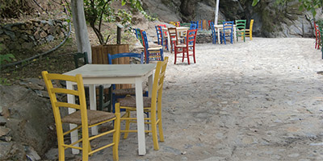

Alle Angebote sind natürlich freiwillig. Es ist uns wichtig, dass du dich wohlfühlst
und das wählst, was für dich entspannend, stärkend und wohltuend ist.
Unser Konzept
Kraftquelle
Entschleunige Dein Leben und verbinde dich mit deiner inneren Energiequelle.
Beschenke dich mit Zeit für dich an einem traumhaften Kraftort auf Kreta: Strand, türkisblaues, glasklares Meer, weg von Trubel und Hektik in Stavros, im Nordwesten von Kreta.
Ein bezauberndes persönliches Ambiente lässt dich mit Blick aufs Meer den Alltag vergessen und dir den Horizont erleuchten.

Meditation
Begrüße den Tag am Meer und erfahre Tiefenentspannung, Selbstheilungsmethoden und Bewegung. Den Sonnenuntergang erlebst du in berührender Weise mit Achtsamkeitsübungen.
Verabschiede, was du nicht mehr brauchst.
Tanke Leichtigkeit, Lebensfreude und Sinnlichkeit, die du auch in deinen Alltag mitnimmst.

Entspannung
Die Gruppengröße ist auf 12 Teilnehmerinnen beschränkt, um ausreichend Raum und Zeit für jede einzelne und der Gruppe zu geben.
Wir wohnen in sehr schönen, gepflegten Einzel-Apartments, jedes mit direktem Meerblick und abends traumhaftem Sonnenuntergang. Jedes Apartment kann auch mit 2 Personen belegt werden,wenn das gewünscht wird.
Purer Genuss von jedem Balkon/Terrasse aus. Entspannung garantiert!

Genießen
Wir erfreuen uns an der Natur und Ursprünglichkeit dieser schönen Insel.
Ausgewählte Plätze Kretas schenken uns positive Energie und wir verbinden uns mit ihr. Hier finden wir Ruhe und sensibilisieren unsere Sinne: Der Blick in die Landschaft, der Duft von wilden Kräutern, das Rauschen des Meeres, das Berühren der Natur. Wir schwingen uns ein in unser Sein und gehen in Verbindung mit unserer inneren Quelle und Weisheit.
Die Abende genießen wir in Tavernen direkt am Meer oder in der Altstadt von Chania und lassen fröhlich, besinnlich und beherzt den Tag ausklingen.

Wegbegleiter
Wer sind die Frauen, die euch von Herzen gerne begleiten? Wir, das Therapeutenteam Susanne Prinz und Helga de Bresser.
Wir wollen euch begeistern, unterstützen und ermutigen zu entschleunigen, eure Kraftquelle (wieder) zu entdecken und neue Perspektiven zu kreieren, die zu euch und eurem Leben passen.
Achtsamkeit und Selbstfürsorge dürfen nachhaltig mehr Raum einnehmen und zu Hause weiterwachsen. Eine Zeit mit Freude, Leichtigkeit und Inspirationen mögen euch nachhaltig in Erinnerung bleiben.

Aufstellungsangebot
Bei der Aufstellungsarbeit handelt es sich um ein therapeutisches Verfahren, das Zusammenhänge innerhalb des Systems (Familie, Organisation, Beruf) mit Personen darstellt, visualisiert und wiederkehrende Muster und Beziehungskonstellationen transparent macht.
Dies geschieht u.a. durch Perspektivenwechsel und über die Art und Weise, wie die Beteiligten räumlich und in Beziehung zu den anderen Personen positioniert sind.
Im geschützten Raum hast du die Möglichkeit, durch die Klarheit Altes in Frieden zu verabschieden, dich neuen Wegen zu öffnen und aus der stärkenden Kraft der Natur zu schöpfen.